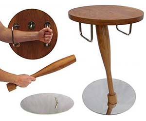

Product Image
| Price | $49.99 |
|---|---|
| Shipping | 1 Leg (dismembered) |
| Total | $299.99 |
The latest in bedside protection is the self defense bedstand. During sleeping, eating, cooking, and other unnecessary downtime enjoy the look of this stylish nightstand. Keep your bedroom clutter-free and organized. However, once the undead horde show up again, simply pull it apart to reveal BOTH a comfy shield and handy bat! (Nails, barbed wire, and attack bunnies sold separately) Once the fun is over, simply rinse off in bleach, run through a dishwasher, reassemble, and try to sleeping despite the overwhelming hopelessness that engulfs you in the darkness!
| Color | Dried Blood/Fresh Blood |
|---|---|
| Shipping Weight | 50.3 lbs |
| Shipping Dimensions | 1.5 X 1.5 X 3.5 ft |
| Assembled Height | 3 feet |
| Assembled Length | 1.25 feet |
| Assembled Width | 1.25 feet |
| Assembled Weight | .5 lbs |
| Effectiveness | 3.2 Zombies |
| User | Arnold Schwarzenegger |
|---|---|
| Stars | 12 |
| Comments | One of the best batstands I could find. Good price, wish it came in camo. Would buy again! Hasta la vista! |
| User | Mr Bill |
|---|---|
| Stars | 4 |
| Comments | I keep getting attacked by 4 zombies at once. I do my best to hold them off by myself, but as this item is only rated to 3.2, they overwhelm me and I have to yell for help because they are going to be mean to me! |
| User | Aunt May |
|---|---|
| Stars | 2 |
| Comments | This nightstand fends off the zombs as advertised, and it shipped in under a year (that's why it's not one star), but functionally it has a major flaw: my doilies fall off the moment I take it apart to defend myself! I had to attach them with superglue to keep them in place. Buyer beware! |